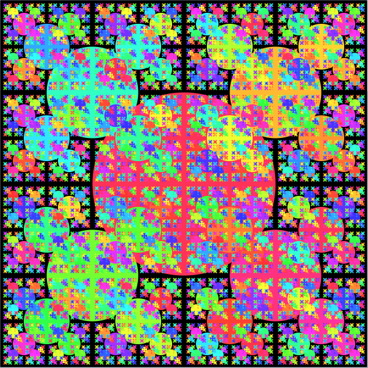
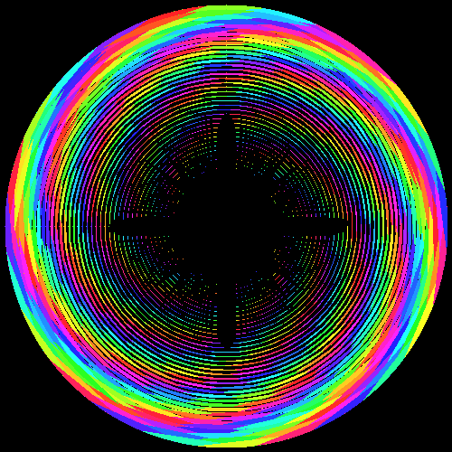

Software Art
These are images which I generated by implementing various algorithms - mathematical art, as some call it.
I am quite fascinated with both mathematics and programming, as well as art. It only makes sense that I would try to tap into the innate beauty of geometry.
Custom rendering
Here is a zoom-out of a very interesting complex fractal, known as the burning ship fractal, drawn here with an escape-time algorithm.
This was done as part of the “fractol” project for the 42 school. You can find the code for on github

With Processing
These images were done with the Processing desktop app, written in Java.



